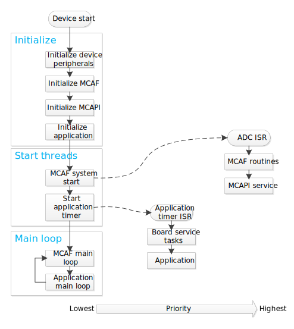
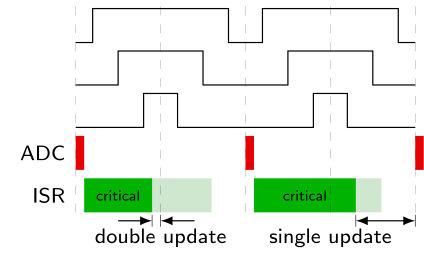

3.6. Scheduling and Optimization¶
3.6.1. Scheduling¶
3.6.1.1. Requirements¶
MCAF has the following set of requirements in terms of scheduling:
MCAF_MainInit()should be called once at system startupMCAF_MainLoop()should be called at each iteration of the main loop. This does not have to be executed periodically, but the minimum repetition rate should be approximately 100Hz to service the various features.- The board handler function,
MCAF_BoardServiceTasks(), should be called periodically by the application once every 0.1ms – 10ms. This period value should be entered in the Customize page of motorBench® Development Suite for the customizable parameter “Ui service period”. This function does not have a hard real-time requirement. - MCAF control ISR routines are time-critical, and need to execute synchronously to the PWM cycle.
3.6.1.2. Implementation notes¶
The MCAF scheduler architecture is fairly simple. It uses cooperative scheduling
with a main thread (the entry point from the main() function) and one ISR
each for the application timer interrupt and the ADC interrupt.
Figure 3.5 Flow diagram showing the main thread, application timer interrupt and the ADC interrupt
The main thread contains initialization functions that run once at startup, and a main loop to execute tasks which are not time-critical.
The application timer handles periodic application and board-related tasks that do not have hard real-time requirements.
The ADC ISR handles tasks that are time-critical, and executes synchronously to the PWM cycle:
ADC triggered by PWM low center, to reject switching-frequency harmonics
ADC ISR triggered when all conversions are complete
PWM timing margin is designed to ensure that time between between register assignment and update is sufficient to meet critical control latency requirements (see Figure 3.6)
Figure 3.6 Timing relationship between control ISR and PWM. Center-aligned PWM can typically be configured either for single or double updates; in single-update mode the PWM generators are updated from software registers at the beginning of each PWM period, yielding symmetrical waveforms, whereas in double-update mode the PWM generators are updated from software registers at the beginning and at center of each PWM period, yielding potentially asymmetric waveforms with twice the update rate. In each case the critical code represents calculations from ADC readings needed to compute new PWM values, and should complete in time for the next PWM generator update.
Most time-critical portion of ADC ISR: Read ADC result, calculate, update PWM
Sufficient CPU time is left over for other calculations:
- tasks which are also time-critical, but their requirements are not as stringent
- tasks which are require some degree of coordination with those tasks running at the ADC ISR rate, so that relocation in the main loop is tricky
Some examples of tasks include
- A current loop that runs once every control ADC ISR (time-critical, part of ADC → PWM latency bottleneck)
- A velocity loop that runs once every N ISRs (for example N=20)
- Other minor tasks, such as monitoring, that run in the ADC ISR
- MCAPI service routine that runs from the ADC ISR and synchronizes MCAPI motor data with control variables within MCAF motor data
- User interface and diagnostic kernel elements that run more slowly in the main loop
3.6.1.2.1. Cooperative Scheduling¶
The term “cooperative scheduling” means that each task runs to completion without blocking, before the next one executes; there is not an operating system which preemptively switches threads of execution before a task has completed.
With this approach, scheduling constraints must be handled explicitly by the designer, rather than at run-time as in an operating system. Typical constraints are
- computation of the current control loop between ADC sampling and PWM update must be complete before the end of the PWM period, so that the effective input-output delay is one sampling period.
- completion of the ADC ISR must occur prior to the next ADC ISR interrupt, so that the next ADC ISR is not delayed
Scheduling constraints can be checked manually, by using the timestamp feature of the test harness to record timer values, in order to make sure that worst-case execution times are acceptable.
3.6.1.2.2. Call tree¶
A sample call tree is shown below in Figure 3.7. This shows many (but not all) of the function calls that take place in the ADC ISR. The time between reading of ADC and update of PWM duty cycles should involve time-critical tasks; other tasks should generally be deferred. Version 1.0 of the MCAF includes a few minor routines that we plan on moving after the PWM update to minimize the critical control latency.
3.6.1.2.3. Thread safety¶
Because the main thread can be interrupted by the control ISR, shared state must be handled carefully.
This shared state is marked with a volatile qualifier, so that the compiler does not make incorrect assumptions. Shared state includes:
- External interface data in
motor.ui(system_state.h) - Test harness information in
motor.testingandsystemData.testing(system_state.h) - Watchdog state in
watchdog(isr.c and main.c) - MCAPI motor data in
motor.apiData(system_state.h)
Thread safety concerns involving this shared state have been addressed in MCAF as follows:
- No individual items of shared data are larger than 16 bits (each item can be read and written atomically in the dsPIC 16-bit architecture)
- MCAF does not require mutually consistent state across multiple items of data
- The only shared state that has multiple writers is
watchdog.isrCount, where the interaction between main and control ISR threads is simple and not prone to concurrency errors (main thread sets count to zero and does not read the count; control ISR increments count and isn’t interrupted by the main thread) - MCAPI functions executing from the main thread use
motor.apiData.apiBusyflag to claim ownership of the shared MCAPI motor data structure while they are executing a critical section of code. Refer to MCAPI section, Handling Concurrency, for more information.
If a more stringent concurrency requirement is needed in the future, shared state will be protected by additional means, for example briefly disabling interrupts, or usage of non-blocking threadsafe data structures.
3.6.2. Optimization¶
The MCAF has four requirements that impact execution time requirements:
- Provide a designated feature set (particular series of algorithms running at the control ADC ISR rate)
- Meet timing requirements with
-O1compiler optimization level in XC16 (-O2and-O3are faster but are only available in the premium licenses for XC16) - Be modular and maintainable: follow good software engineering practices
- Be efficient so that sufficient CPU cycles remain for customer applications
These pose an interesting dilemma. Good software engineering practices encourage refactoring large, complex software functions into small, simple, maintainable functions, each handling a single, well-defined purpose. But doing so in C adds additional stack frames, which tend to add execution time. This can be significant in systems with high update rates.
For example, the following code contains a function pwm_clip_and_update
for constraining a set of 3 duty cycle values between allowable limits and write
hardware registers:
#include <stdint.h>
#include <xc.h>
typedef struct {
uint16_t duty[3];
} pwm_t;
typedef struct {
uint16_t min;
uint16_t max;
} limits_t;
void pwm_clip_and_update(pwm_t *ppwm,
const limits_t *plimits)
{
if (ppwm->duty[0] >= plimits->max)
ppwm->duty[0] = plimits->max;
if (ppwm->duty[0] <= plimits->min)
ppwm->duty[0] = plimits->min;
if (ppwm->duty[1] >= plimits->max)
ppwm->duty[1] = plimits->max;
if (ppwm->duty[1] <= plimits->min)
ppwm->duty[1] = plimits->min;
if (ppwm->duty[2] >= plimits->max)
ppwm->duty[2] = plimits->max;
if (ppwm->duty[2] <= plimits->min)
ppwm->duty[2] = plimits->min;
PDC1 = ppwm->duty[0];
PDC2 = ppwm->duty[1];
PDC3 = ppwm->duty[2];
}
The pwm_clip_and_update() function body is only 16 lines, but it can be
simplified further into sub-functions that handle clipping and updating the
hardware registers:
void clip_u16(uint16_t *px, const limits_t *plimits)
{
if (*px >= plimits->max)
*px = plimits->max;
if (*px <= plimits->min)
*px = plimits->min;
}
void set_pwm(const pwm_t *ppwm)
{
PDC1 = ppwm->duty[0];
PDC2 = ppwm->duty[1];
PDC3 = ppwm->duty[2];
}
void pwm_clip_and_update(pwm_t *ppwm, const limits_t
*plimits)
{
uint16_t *px = &ppwm->duty[0];
clip_u16(px, plimits);
clip_u16(++px, plimits);
clip_u16(++px, plimits);
set_pwm(ppwm);
}
Now we have functions with a maximum body length of 5 lines, each of which are simpler. Furthermore, it is easier to avoid copy-paste errors like the ones below:
void pwm_clip_and_update(pwm_t *ppwm,
const limits_t *plimits)
{
if (ppwm->duty[0] >= plimits->max)
ppwm->duty[0] = plimits->max;
if (ppwm->duty[0] <= plimits->min)
ppwm->duty[0] = plimits->min;
if (ppwm->duty[1] >= plimits->max)
ppwm->duty[1] = plimits->max;
if (ppwm->duty[1] <= plimits->min)
ppwm->duty[1] = plimits->min;
if (ppwm->duty[1] >= plimits->min) // OOPS
ppwm->duty[2] = plimits->max;
if (ppwm->duty[2] <= plimits->min)
ppwm->duty[2] = plimits->min;
PDC1 = ppwm->duty[0];
PDC2 = ppwm->duty[1];
PDC3 = ppwm->duty[2];
}
We compiled the code in Listing 3.17 and Listing 3.18 with XC16 1.25 targeting the dsPIC33E256MC506, and analyzed the results for maximum cycle counts:
| -O1 | -O2 | -O3 | |
|---|---|---|---|
| Listing 3.17 — one big function | 56 | 49 | 49 |
| Listing 3.18 — refactored | 105 | 49 | 49 |
| Listing 3.20 — refactored + inline | 56 | 49 | 49 |
The refactoring in Listing 3.18 added 49 cycles under -O1 but
not in -O2 or -O3. Why?
The cost of a function call in the 33E architecture is
RCALL: 4 cyclesRETURN: 6 cycles- register setup to comply with function call conventions (
W0-W7are caller saved, to allow for arguments and return values;W8-W14are callee saved)
The refactored version of pwm_clip_and_update contains 4 function calls,
so this adds 40 extra cycles for the RCALL and RETURN instructions,
and the other 9 cycles involve register moves to comply with function
call conventions.
With -O2 and -O3 optimizations, the XC16 compiler automatically
inlines small functions. We can coerce XC16 into doing this under -O1
by adding the inline keyword:
inline void clip_u16(uint16_t *px, const limits_t *plimits)
{
if (*px >= plimits->max)
*px = plimits->max;
if (*px <= plimits->min)
*px = plimits->min;
}
inline void set_pwm(const pwm_t *ppwm)
{
PDC1 = ppwm->duty[0];
PDC2 = ppwm->duty[1];
PDC3 = ppwm->duty[2];
}
void pwm_clip_and_update(pwm_t *ppwm, const limits_t
*plimits)
{
uint16_t *px = &ppwm->duty[0];
clip_u16(px, plimits);
clip_u16(++px, plimits);
clip_u16(++px, plimits);
set_pwm(ppwm);
}
This technique is used frequently in the MCAF to keep execution time low,
but still allow for modular refactoring. You will see inline and
inline static used frequently in functions that are either very simple
or called only once.
If you are interested in using inline in your own code, please read the following
section, before you start sprinkling it around haphazardly.
3.6.2.1. The Compleat Inliner: A Primer¶
The inline keyword in C is a tool, and like all tools, it can be used
both appropriately and inappropriately. Two things to keep in mind are:
- Please be aware that in C, the
inlinekeyword is a hint to the compiler, not a requirement. In theory the compiler is free to ignore it; in practice it can be a useful tool. - Keep a good sense of proportion, and understand how often your code executes.
We discussed an example of reducing
a function from 105 cycles to 56 cycles. In a 70MIPS dsPIC® DSC device,
this would save 700 nanoseconds.
- If this is in code that executes once per
second, it would be an insignificant improvement, and
inlinedoes have some significant disadvantages, discussed later in this section - If this is in code that executes at a 20 kHz rate, it would save 1.4% of the
CPU, which is not a huge savings, but it is significant for adding
inlinein two simple instances.
- If this is in code that executes once per
second, it would be an insignificant improvement, and
With that as a prologue, here are some general rules for inlining in C.
Don’t do it.
Ignore Rule #1 if a function is very small. Good candidates for inlining are functions that are less than ≈70 cycles, whether that is the total time, or the time excluding 2nd-level calls, as in “adapter” functions like the one shown below:
inline void middle_man(int16_t x, int16_t y) { delegate_to_someone_else(y, x); // all I do is reverse args }
Ignore Rule #1 if a function is called only once.
Ignore Rule #1 if you are desperate to optimize. Desperation can lead to poor decision-making, so don’t do it lightly.
If you ignore Rule #1, don’t inline blindly.
5a. Use
-save-temps(this keeps the intermediate assembly files generated by the compiler) and develop habit of spot-checking the compiler output5b. Measure execution times — code execution time will be dependent on how inline functions are used, and may change unexpectedly upon changes in caller code.
Call sites (point of use) must be in the same compilation unit as the inline function definition
- Assembly code generation is determined by the compiler
- The compiler processes one compilation unit at a time
- The compiler can’t see the source of other compilation units
- The compiler does not see the source directly; instead it sees the output
of the preprocessor (effectively one .c file + any
#included .h files) - The linker can only relocate addresses; it can’t change the sequence of
instructions (some newer compiler toolchains have link-time / “whole program” optimization
which get around this restriction — if you have such a toolchain you should
probably rethink your use of
inline)
6a. “Local” function definitions (function definition and call site in the same .c file) —
inlineis sufficient.inline void set_pwm(const pwm_t *ppwm) { PDC1 = ppwm->duty[0]; PDC2 = ppwm->duty[1]; PDC3 = ppwm->duty[2]; } void pwm_clip_and_update(pwm_t *ppwm, const limits_t *plimits) { uint16_t *px = &ppwm->duty[0]; clip_u16(px, plimits); clip_u16(++px, plimits); clip_u16(++px, plimits); set_pwm(ppwm); }
6b. “Shared” function definitions (call site in a .c file, function definition in a .h file) — this requires the use of
inline static. Thestatickeyword prevents the function from being referenced from other compilation units, effectively giving each compilation unit its own private copy; otherwise, the linker will complain about duplicates.inline static void set_pwm(const pwm_t *ppwm) { PDC1 = ppwm->duty[0]; PDC2 = ppwm->duty[1]; PDC3 = ppwm->duty[2]; }
#include "foo.h" void pwm_clip_and_update(pwm_t *ppwm, const limits_t *plimits) { uint16_t *px = &ppwm->duty[0]; clip_u16(px, plimits); clip_u16(++px, plimits); clip_u16(++px, plimits); set_pwm(ppwm); }
Understand the consequences when you
inlinea functionUsing
inline staticin a .h file causes transitive dependencies. See the following table: (the → symbol means “depends on”)No inline static Use of inline static m1.c → m2.h
m2.c → m3.h
m1.c → m2.h → m3.h int m2_foo(int x); /* function declaration only Ha ha I don't have to tell you how it works */
#include "m3.h" inline static int m2_foo(int x) { return 42 - m3_bar(x); }
The function implementation cannot be secret
The function cannot be put into a precompiled library, which means, for example, that if you are creating a library and you have access to the premium version of XC16, you can’t compile it with
-O3to make it available to library customers who do not have access to-O3More code space is typically needed, in order to support multiple call sites. For example, don’t do this:
Listing 3.26 ¶extern void burp(int x); // some other function with side effects inline int f0(int x) { burp(x); return x+1; } // 1 burp inline int f1(int x) { burp(x); return f0(x) + 1; } // 2 burps inline int f2(int x) { burp(x); return f1(x) + f0(x); } // 4 burps inline int f3(int x) { burp(x); return f2(x) + f1(x); } // 7 burps inline int f4(int x) { burp(x); return f3(x) + f2(x); } // 12 burps inline int f5(int x) { burp(x); return f4(x) + f3(x); } // 20 burps inline int f6(int x) { burp(x); return f5(x) + f4(x); } // 33 burps inline int f7(int x) { burp(x); return f6(x) + f5(x); } // 54 burps inline int f8(int x) { burp(x); return f7(x) + f6(x); } // 88 burps inline int f9(int x) { burp(x); return f8(x) + f7(x); } // 143 burps
Aside from producing ambiguously-ordered execution — in expressions like
f1(x) + f0(x)there is no guaranteed order: the compiler may choose to executef1(x)first or it may choose to executef0(x)first, so side-effects like calls toburp()may not always appear in the same order — callingf9()will create code that asks the compiler to inline 143 separate calls toburp(), which is probably a waste of code space.Execution time is not fixed — depending on the caller, the compiler may produce optimized assembly code differently at each call site.
Inlined functions “lose their identity”:
- Debugging may be harder (you don’t see an entry in the call stack, and breakpoints may not work)
- They don’t appear separately in the linker map
Language lawyers will say you can’t depend on it. (in theory they are right, in practice they are wrong… at least until the next version of the compiler has changes that break your code)
Continued vigilance is required (see Rule #5) to ensure inlining works as expected.
Using inline can be a powerful tool in programming C on embedded systems, but
it comes with costs, and should only be used with appropriate care.